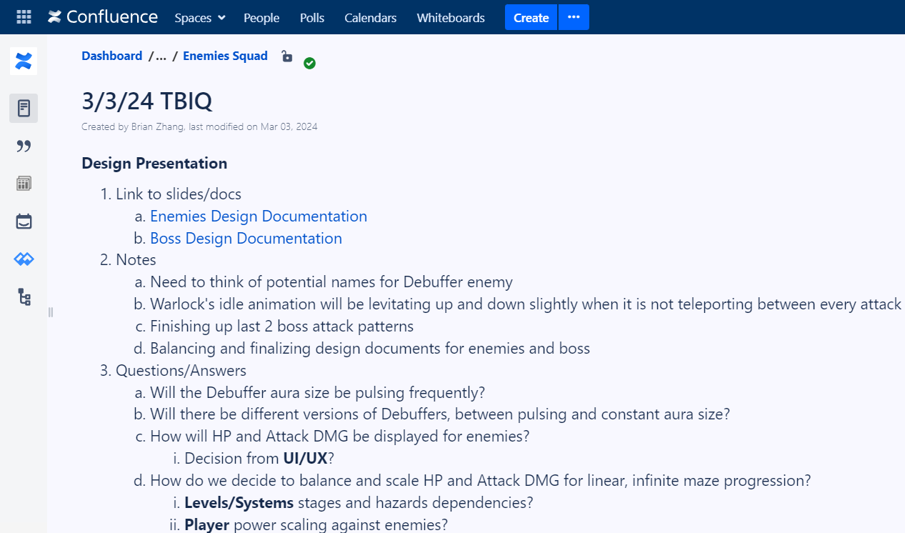
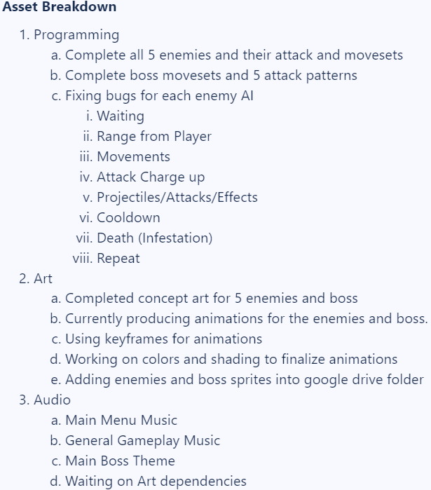
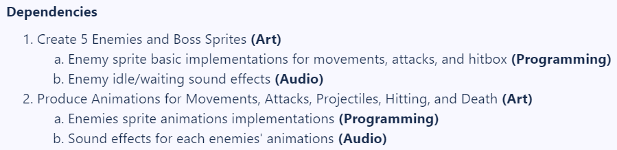
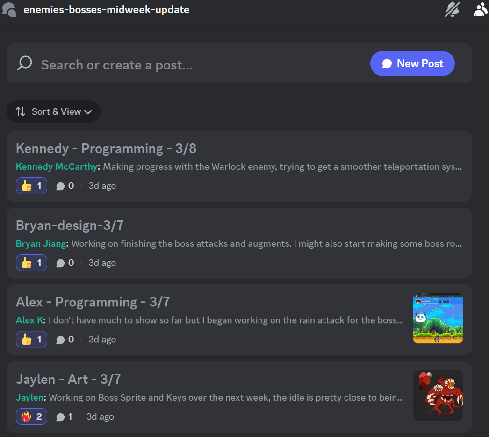
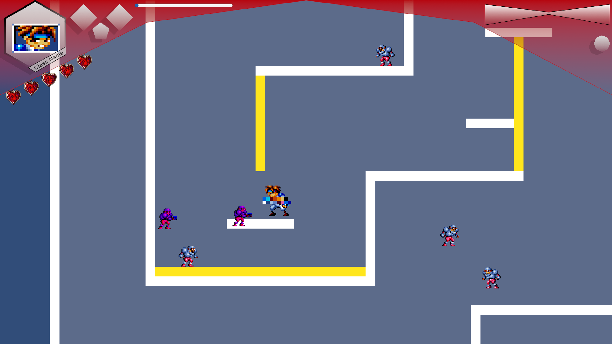
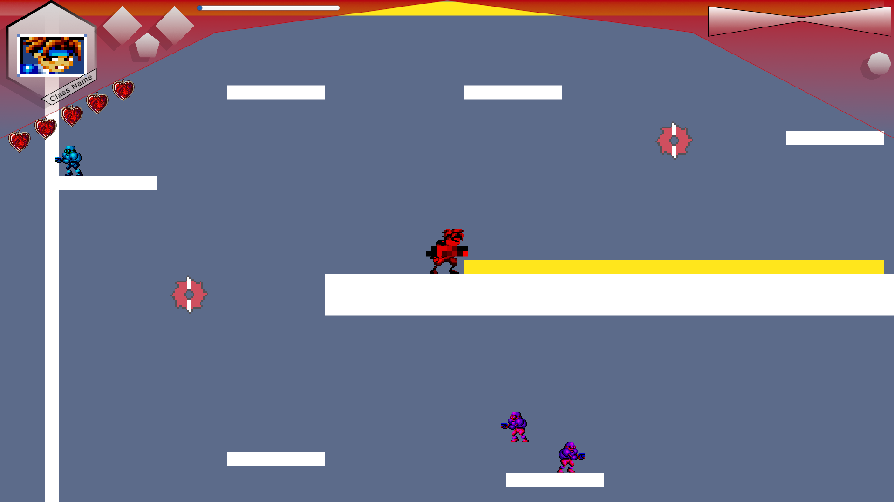
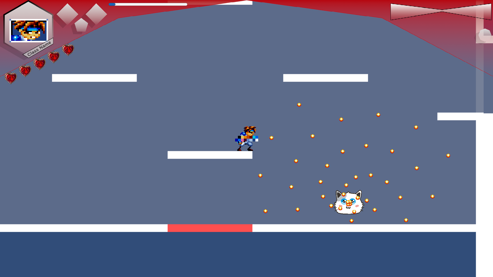
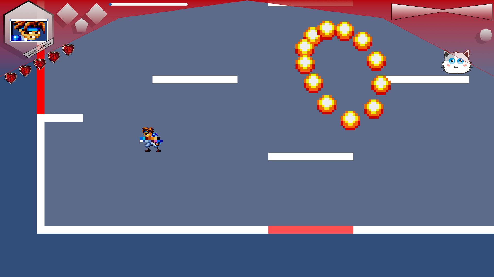

Mid Sprint 2
Production Sync-up Meeting
During the production sync-up, the lead producer methodically inquires about updates from each squad through their respective producers,
aiming to make the leads' meeting as productive as possible. To ensure all leads are well-informed and engaged, a Google Docs template
is introduced, detailing the Sprint 2 goals for the player, enemies, level, and UI/UX squads. Additionally, the lead producer outlines
the new production process and announces that the studio-wide meeting will be conducted virtually the following day. The session also
covers the scheduling of upcoming events, including playtesting, mentorship, and workshop sessions. A new Google Form is created for
playtesters to provide constructive feedback on the game prototype by answering specific questions about their experience. This
structured approach facilitates clear communication and effective planning, aligning team efforts towards achieving project milestones.
Leads Meeting
The meeting focused on key areas such as playtesting, production process improvements, and the detailed goals across design,
programming, art, and audio. The agenda included organizing feedback through a playtest form, scheduling a comprehensive playtest
with Cam, and revising the production workflow for efficiency. The team aimed to refine game mechanics by integrating diverse player
movements, weapon types, projectiles, and developing complex enemy AI with a variety of attacks and movements, including a challenging
boss. Level design goals were ambitious, aiming to create a seamless game loop with multiple stages, a shop, and a boss level,
complemented by a basic yet functional UI/UX design. The programming efforts mirrored these goals, focusing on implementing these
features robustly. On the art front, plans were made for finalizing sprites, animations, and concept art to bring the game's visual
elements to life, while the audio team focused on creating immersive sound effects and music to enhance the gaming experience.
Studio-wide Meeting
In the studio-wide meeting, several key announcements were made to ensure everyone was up to speed on upcoming events and processes.
It was announced that there would be a TBIQs review and various squad/department meetings, with specific mention of Nigel Charleston's
meeting scheduled for today at 5 PM, and Matt Rader's playtest slated for Friday, March 8th at 6:30 PM, occurring live during the work
session. Additionally, an invitation was extended to those interested in learning more about WolverineSoft Club, offering an opportunity
to join the club, enjoy free food, and play party games such as JackBox, Smash, and Mario Kart. This special event is set for Sunday,
March 10th at 1pm, following the studio meeting, in BBB 1690, promising a mix of food and fun with party games. The meeting also
covered the design presentation, where designers were expected to present their designs, field questions, and perform an asset breakdown
to dissect the design into components, leading to task creation and the establishment of dependencies and priorities.
Task Breakdown Implementation Questions Documentation
During the design presentation, comprehensive updates on the enemy and boss design documentation were shared through links to slides and
documents, with specific notes on the need for naming a Debuffer enemy and detailing the Warlock's idle animation as a slight levitation.
The presentation also covered the finalization of the last two boss attack patterns, balancing, and finalizing design documents for enemies
and bosses. Questions about the Debuffer enemy's aura, enemy HP and Attack DMG display, and balancing for infinite maze progression were
discussed, alongside decisions related to UI/UX, player power scaling, and dependencies between levels/systems. The asset breakdown
highlighted the programming team's efforts to complete enemy and boss movesets, fix AI bugs, and integrate art and audio, including
completing concept art and animations for enemies and bosses, adding sprites to a Google Drive folder, and composing music for the main
menu, general gameplay, and the main boss theme, ensuring a cohesive development process across all departments.



Industry Playtest with Jeffrey - Chimeric
On Sunday, March 3rd at 5pm, Nigel Charleston, a former programming director, 494 IA, and current XR software engineer at Qualcomm, conducted
a playtest of Project Classic. His feedback highlighted several areas for improvement and praise. Charleston noted the game's movement mechanics
were enjoyable, but found the use of different weapons non-intuitive and the projectiles too slow, suggesting the game lacked challenge. He
recommended adding more enemies with improved stats to enhance the game's difficulty and making the ninja class's unique features more prominent.
While finding the movement fun, he suggested it could be made more weighty to fulfill a "power fantasy" where players feel empowered decimating
hordes of tougher enemies. He appreciated the level design, particularly the handcrafted levels, despite noticing some repetition. The combo weapons
system was seen as cool, but Charleston stressed the need for a tutorial to better explain it. His final thoughts included adjusting the difficulty
to incentivize the use of more powerful weapons, exploring more with the ceiling stick platform, diversifying level designs, and clarifying class
effects. He also reported bugs related to character mobility, weapon selection, spike traps not dealing damage, and various issues related to the
debug menu, damage inconsistencies, an invincible tank, level generation errors, and problems returning to the main menu.
Logging and Updating Tasks on Jira
The methodical process of recording and updating tasks in Jira involves a detailed examination of design documents by producers, participation in
playtesting sessions, holding detailed discussions in squad meetings, and resolving any arising questions. This systematic strategy is crucial for
pinpointing and rectifying bugs, as well as incorporating new programming features essential for refining the gameplay experience. Emphasizing the
importance of early bug detection and resolution, the approach taken by the programming team is proactive, aiming to prevent potential issues and
ensure a smooth gaming experience. This includes the design of two enemy types and the development of five distinct boss attack patterns, alongside
the creation of sound effects for the movement and projectiles of enemies and bosses, all of which are pivotal for bringing the game's adversaries to life
and enhancing the overall player engagement.
Mid-week Update Checkup
During the midweek check-up, the focus was primarily on developing the Boss Sprite and designing keys, with significant progress made towards completing
the idle animation. The immediate tasks involve organizing the boss's limbs into layers for animation purposes and making slight adjustments to the color
palette. Although still in the early stages, work has begun on a unique rain attack for the boss, aiming to finalize this along with other boss attacks
and augments in the coming week. There's also consideration being given to the creation of specific boss rooms, contingent on current availability.
Additionally, advancements have been made with the Warlock enemy, particularly in refining its teleportation mechanics for smoother movement, with most of
its essential functions already implemented.

Playtesting Project Classic Prototype
The playtest of this game prototype reveals a platformer-style environment with pixel art design. The images depict a character navigating through levels with
various obstacles and enemies. One image shows the character avoiding circular saw blades on platforms, suggesting precision and timing are key gameplay mechanics.
Another showcases an encounter with a boss emitting a ring of fire, indicating a need for strategic movement and perhaps a pattern recognition challenge for the player.
Additionally, there's a snapshot of the character facing enemies that resemble knights, which may test the combat system's efficacy. Finally, an image with a different
boss unleashing multiple projectiles in a cross pattern adds variety to the boss fights, implying a more complex dodge mechanic. Together, these images hint at a game that
combines traditional platforming with combat elements, challenging the player with a mix of strategic movement and action-based gameplay.




Hours Breakdown
Mid Sprint 2
- Production Sync-up Meeting (30 minutes)
- Leads Meeting (1 hour)
- Studio-wide Meeting (2 hours 15 minutes)
- Studio Announcements: 11:00 AM ~ 11:20 AM (10 mins)
- Project Announcements: 11:20 AM ~ 11:30 AM (20 mins)
- Squad Meeting: 11:30 AM ~ 12:15 PM (45 mins)
- Department Meeting: 12:15 PM ~ 1:15 PM (60 mins)
- Task Breakdown Implementation Questions Documentation (1 hour)
- Industry Playtest with Jeffrey - Chimeric (1 hour)
- Logging and Updating Tasks on Jira (1 hour 30 mins)
- Midweek Update Checkup (15 minutes)
- Playtesting Project Classic Prototype (1 hour 30 mins)
Time Investment: 3 credits x 1 x 3 hours = 9 hours